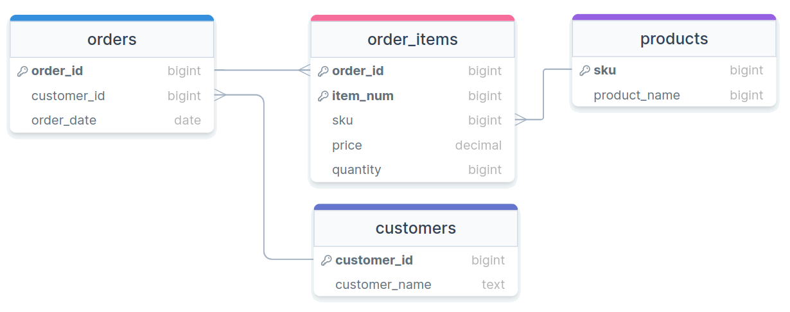
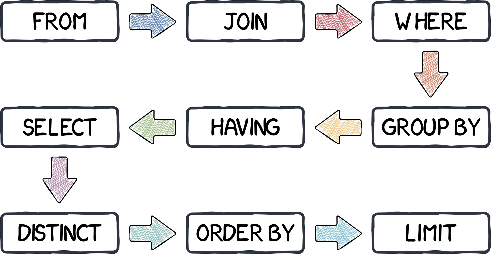

Grouping JSON Model Indexes
Jed Rembold
February 19, 2025
Announcements
- Homework 5 due tonight!
- Homework 6 due next Wednesday
- No class next week!
- I’ll be in Pittsburgh for SIGCSE
- Instead, next Wednesday you’ll be sent the description and requirements of the midterm tutorial video assignment
- You’ll have until the following Wednesday (March 5th) to submit a link to that upload
Building a Model
Data Modeling
- Data Modeling is the act of best deciding how to represent and store data such that it relates to the real world
- As much as possible, it is generally desirable to:
- ensure the model can easily help answer the types of questions you will want to ask
- operate at as low a level of granularity as possible
- remove redundancy
- ensure referential integrity
Normalization
- First introduced by Edgar Codd in the early 1970s
- Codd outlined the following goals:
- to free the collection of relations from undesirable insertion, update, and deletion dependencies
- To reduce the need for restructuring the collection of relations as new types of data are introduced
- To make the relational model more informative to users
- To make the collection of relations neutral to what queries are being run on them
- To assist in these efforts, Codd introduced the idea of normal forms
What is normal?
- Each normal form builds on those before
- The primary normal forms are:
- Denormalized
- No normalization. Nested and redundant data is allowed
- First normal form (1NF)
- Each column is unique and has a single value. The table has a unique primary key.
- Second normal form (2NF)
- Partial dependencies are removed (only necessary if compound primary key)
- Third normal form (3NF)
- Each table contains fields only relevant to its primary key, and has no transitive dependencies
Denormalized
- APIs will commonly give denormalized data, since they tend to return JSON type entries
- Consider the entry to the right about a particular order
{ "OrderID": 100,
"OrderItems": [
{
"sku": 1,
"price": 10,
"quantity": 1,
"name": "Thingmajig"
},
{
"sku": 2,
"price": 25,
"quantity": 2,
"name": "Whatchamacalit"
}],
"CustomerID": 5,
"CustomerName": "Jed Rembold",
"OrderDate": "2022-11-09" }Initial Attempt
| OrderID | OrderItems | CustomerID | CustomerName | OrderDate |
|---|---|---|---|---|
| 100 |
|
5 | Jed Rembold | 2022-11-09 |
1st Normal Form
| OrderID | Sku | Price | Quantity | ProductName | CustomerID | CustomerName | OrderDate |
|---|---|---|---|---|---|---|---|
| 100 | 1 | 50 | 1 | Thingmajig | 5 | Jed Rembold | 2022-11-09 |
| 100 | 2 | 25 | 2 | Whatchamacalit | 5 | Jed Rembold | 2022-11-09 |
1st Normal Form (PK)
| OrderID | ItemNum | Sku | Price | Quantity | ProductName | CustomerID | CustomerName | OrderDate |
|---|---|---|---|---|---|---|---|---|
| 100 | 1 | 1 | 50 | 1 | Thingmajig | 5 | Jed Rembold | 2022-11-09 |
| 100 | 2 | 2 | 25 | 2 | Whatchamacalit | 5 | Jed Rembold | 2022-11-09 |
Evaluating 2NF
- To be in second normal form, there can be no partial dependencies, where columns depend on only one of the compound keys
- Here though the last 3 columns all depend only on OrderID
- Solution: Split to new tables!
2nd Normal Form
| OrderID | CustomerID | CustomerName | OrderDate |
|---|---|---|---|
| 100 | 5 | Jed Rembold | 2022-11-09 |
| OrderID | ItemNum | Sku | Price | Quantity | ProductName |
|---|---|---|---|---|---|
| 100 | 1 | 1 | 50 | 1 | Thingmajig |
| 100 | 2 | 2 | 25 | 2 | Whatchamacalit |
Evaluating 3NF
- The third normal form prohibits transitive dependencies, where a column depends on another (that depends on the primary key), instead of depending directly on the primary key
- Here we have 2! One in each table:
ProductNamedepends onSkuCustomerNamedepends onCustomerID
- Solution? More tables!
3rd Normal Form
| Sku | ProductName |
|---|---|
| 1 | Thingmajig |
| 2 | Whatchamacalit |
| CustomerID | CustomerName |
|---|---|
| 5 | Jed Rembold |
| OrderID | ItemNum | Sku | Price | Quantity |
|---|---|---|---|---|
| 100 | 1 | 1 | 50 | 1 |
| 100 | 2 | 2 | 25 | 2 |
| OrderID | CustomerID | OrderDate |
|---|---|---|
| 100 | 5 | 2022-11-09 |
Visually

Beyond
- Other normal forms exist (up to 6NF in the Boyce-Codd system)
- Most people only care about the first 3 to get data in a “normalized” state
- Unless you have specific performance reasons for wanting otherwise, you really should strive for normalized tables in your relational database, as they make maintaining, adding, updating, and adjusting your database and tables much easier
Activity
Think back to the Spotify modeling that we were playing around with last week
Suppose you have the following information you need to store for each track:
Info Description Track Name The name of the track Artists Comma separated list of contributing artists Album The album this specific track appears on Duration The duration of the track in seconds Genre The general genre of the track Track Num The placement of this track on the album Your task is to model this information into purely tables of 3NF
Activity Example Data
- Sometimes it helps to have some example data to look at:
| TName | Artists | Album | Duration | Genre | TNum |
|---|---|---|---|---|---|
| Don’t Stop Believin’ | Journey | Greatest Hits | 249 | Rock | 2 |
| Don’t Stop Believin’ | Journey | Escape | 251 | Rock | 1 |
| Fifteen | Taylor Swift | Fearless (Taylor’s Version) | 294 | Country Pop | 2 |
| Under Pressure | Queen,David Bowie | Greatest Hits | 238 | Rock | 7 |
Indexing
Consulting an Index
- Like in a book, an index is a precomputed guide to help find things faster
- We can construct similar precomputed guides for certain columns in SQL to also help find things faster!
- There are several different types of indexes
- By default, the assigned index type is a B-Tree index in Postgres
- B-Tree stands for balanced tree and work best for orderable type data
- Index types like Generalized Inverted Index (GIN) and Generalized Search Tree (GiST) will be discussed later as they come up
- Different columns in the same table can be indexed with different methods
- By default, the assigned index type is a B-Tree index in Postgres
Climbing a B-Tree

Creating Indexes
Postgres will automatically index any column that is a primary key or which has the
UNIQUEconstraintYou can choose to set up indexes on other columns as well, but do so outside of the table creation
CREATE INDEX |||index name||| ON |||table name||| (|||column|||);If you decide you want to remove an index, you do so using the index name:
DROP INDEX |||index name|||;
Benchmarking
How can we objectively test this?
- Postgres has the
EXPLAINkeyword to give you information about what the database is doing in the background - Using
EXPLAIN ANALYZEwill also give you timing information about how long it took a query to run
- Postgres has the
EXPLAINalways comes at the start of your queryEXPLAIN ANALYZE SELECT * FROM |||table name||| WHERE |||condition|||;Other SQL variants have their own versions, but most have some method of getting information back about execution time or what is being done under the hood
Benchmarking Caveats
EXPLAIN ANALYZEreports to you the time it took the server to process the query, not necessarily the time it took your client to finish getting and rendering the response!- Especially for queries that return a huge number of rows, you might see a significant difference
- Indexes are optimized for certain types of operations. Just because
you index a column doesn’t mean that Postgres will use
that index if you are doing an incompatible operation!
- Check more than just the timings from
EXPLAIN ANALYZE- See comments about Bitmaps and Heaps? Then the index was used.
- See comments about Parallel or Seq scans? Then the index was not used.
- Check more than just the timings from
Costs
- Indexes always have a cost associated with them, both in initial
setup and in every time new data is added to the column
- Also, they are stored information, so they can also inflate your database size
- Consider indexing only those columns that receive the heaviest of use in filters or in joining
- You never need to worry about indexing primary keys or unique
columns, as those are done automatically
- Indexing of foreign keys though is not automatic, and might be a good idea for large datasets
- When in doubt, benchmark your queries before and after adding an index to see if you are really gaining much from it!
Benchmarking Activity
- Most likely, you already (still) have the NYC Taxi Rides data on your computer
- Benchmark that data set under three different queries, for each
getting a time both before creating an index and then after creating an
index over the filtered column
- Select all the columns for the row where the ride id = 56789
- Select all the columns for the rows where the total amount charged was greater than $40
- Select all the columns for the rows where the total amount charged was greater than $10
- Enter your values into the shared spreadsheet here (Just choose an unused trial number)
Break!
Break Time!

Grouping
Birds of a Feather
It is frequently the case that values in a particular table column all belong to a smaller subset of categories or options
- Think months of the year or political parties
With current methods, if you want to compare some sort of aggregate between those categories or options, you need to do it in multiple queries:
SELECT AVG(age) FROM voters WHERE party = 'D'SELECT AVG(age) FROM voters WHERE party = 'R'This rapidly becomes intractable if you want to compare across many categories
The Fix
- SQL has one last fundamental trick up its sleeve with the
GROUP BYcommand GROUP BYgathers together all rows with matching values from a particular column- By itself, this is basically the same as running
DISTINCTon a column - Note that once you make a grouping, you can only select entire columns that are a part of the grouping
SELECT |||grouped column||| FROM |||table name||| GROUP BY |||grouped column|||;- By itself, this is basically the same as running
- Can visualize as if many smaller tables were created, one for each grouping, which are then joined back together with each table contributing one row
Aggregating Groups
Groups by themselves are not that useful, since we already had
DISTINCTThe prime use-case of
GROUP BYis to be able to run aggregates across all potential groups simultaneously for comparisonSELECT |||grouped column|||, min(|||some other column|||), avg(|||some other column|||) FROM |||table name||| GROUP BY |||grouped column|||;Causes any aggregate function to just aggregate over the smaller, group tables
Group Example
Looking back at the cereal table, how can we answer:
- Which manufacturer sells the most sugar-laden cereal?
- What shelf has the most cereals placed on it? What about the greatest calorie average?
MULTIPLE GROUPS
- Like with
DISTINCTorUNIQUE, you can group by multiple columns - Essentially splits the sub-tables into even smaller tables, one for each combination
SELECT
|||grouped col1|||,
|||grouped col2|||,
min(|||other col|||),
avg(|||other col|||)
FROM |||table|||
GROUP BY |||grouped col1|||, |||grouped col2|||HAVE or HAVE NOT
- You can not filter based on aggregates using
WHEREWHEREactions happen before any aggregates can be computed
- If you want to filter your grouped results, you need to use
HAVINGHAVINGfilters take place after groups and aggregates have been computed
SELECT
|||grouped col|||
min(|||other col|||),
avg(|||other col|||)
FROM |||table|||
GROUP BY |||grouped col|||
HAVING min(|||other col|||) > 50;Server Ordering

Who’s Son?
JSON in Postgres
- One data type that we haven’t discussed yet in Postgres is
json - Postgres actually support two
jsontypes:json: stores data as text- Slower to process, but maintains whitespace and key orderings
jsonb: stores data in a binary format- Slightly slow to insert, but much faster to process
- Can have indexes defined
- In general,
jsonbis probably preferable unless you really need what the basejsontype offers
Populating JSON Tables
JSON is frequently given with the outermost type being a list, and then each record inside separated by commas
Postgres will not innately be able to import this type of document
Instead, Postgres
COPYworks best when the JSON is a newline delimited JSON file (sometimes called jsonlines), where each new record is on a single line, and there is no surrounding[]COPY |||table name||| FROM |||your newline json file|||.jsonWant to follow along? A jsonlines file is here!
JSON Selections
You can drill down and select specific values from
jsonorjsonbtypes using two different syntaxes:raw_json -> 'key'/indexwhere:- key is a string for key-value pairs
- index is an integer for arrays (0-based!)
raw_json['key'/index]with the same conventions as above
These can be “chained” to “drill down” to the desired info
raw_json -> 'siblings' -> 0 -> 'name'These selections return more
json/jsonbobjects! Convert as neededUsing
->>will instead return aTEXTtype object
JSON Existence
Recall that JSON does not enforce a strict schema, so some entries may have keys or values that others are missing
It can thus be useful to check for the existence of certain keys or values
You can check if an entire chunk is contained within a block of JSON using
@>:raw_json @> |||sub-snippet of json|||You can also check if a key or value shows up in the top level of the JSON block using
?:raw_json ? |||top-level key|||
JSON Indexes
While you can create a default B-tree index for
jsonbcolumns, they generally wouldn’t be very usefulInstead, we can use a different type of index called a generalized inverted index, or GIN
This type of index works much better when the data is comprised of nested composite items (we’ll see it again when we look at text searching)
Just add
USING GINto your normal command to make an indexCREATE INDEX |||my index||| ON |||mytable||| USING GIN (|||colname|||);
A Question of Timing
Date-Time Reminders
- We have about 4 current date or time related data types
- Date time types:
DATE: holds a single individual dayTIME: holds a single individual timeTIMESTAMPor variants withTIMESTAMPTZ: holds a combination of date and time, along with a potential time zone
- Interval types:
INTERVAL: holds a duration of time
Extracting Pieces
- Having all the information in one value is convenient, but sometimes
you only need pieces
- The hour from the time, or the month from the date
- These can be particularly important with aggregates!
- Two methods to extract pieces of any datetime or interval type:
- SQL standard:
extract( part FROM |||datetime_value||| ) - Postgres specific:
date_part( |||part|||, |||datetime_value||| )
- SQL standard:
- Both will return a
DOUBLE PRECISIONvalue of whatever part was requested
Parts To Extract
- You have a wide variety of what you can extract
| text | Description |
|---|---|
| century | What century the date is in. 1st century starts 0001-01-01★ |
| day | What day of the month |
| decade | The year divided by 10 |
| dow | The day of the week (0-6, starting with Sunday) |
| doy | The day of the year |
| epoch | Number of seconds since 1970-01-01 |
| hour | The current hour (0-23) |
| microseconds | The number of microseconds |
| text | Description |
|---|---|
| milliseconds | The number of milliseconds |
| minute | The minute |
| month | The month (1-12) |
| quarter | What quarter of the year (1-4) |
| second | The number of seconds |
| timezone | The timezone offset in seconds |
| timezone_hour | The timezone offset in hours |
| week | What week of the year. ISO weeks start on Monday |
| year | The year |
★ – If you disagree with this, please write your complaint to: Pope, Cathedral Saint-Peter of Roma, Vatican.
Reversing it
- Often times existing data sets have already separated out different
aspects of the date or time
- Year, month, and day might be in different columns for example
- It can be useful to “stitch” these together into an actual datetime type for further use.
- Postgres gives you a handful of functions to do so:
make_date( |||year|||, |||month|||, |||day|||): Returns a newDATEtype valuemake_time( |||hour|||, |||minute|||, |||seconds||| ): Returns a newTIMEtype value (with no timezone)make_timestamptz(|||year|||,|||month|||,|||day|||,|||hour|||,|||minute|||,|||second|||,|||time zone|||): Returns a newTIMESTAMPTZtype valuemake_timestampandmake_intervalalso exist
Aging well
- Subtracting two
DATEtype values will give just anINT(in days) - Subtracting two
TIMESTAMPtype values will give anINTERVAL, with the biggest “unit” in days - Using Postgres’s
age()function can smooth over both and give units larger than daysage( datetime1, datetime2 ): Subtracts datetime2 from datetime1
- This can still give you awkward interval units at
times though, so also consider using
justify_interval( interval ), which breaks intervals into divisions that don’t exceed a categories max- Hours would always be between 0 and 23 for instance, or months between 1 and 12
- Especially if you want to extract a particular part, this is highly recommended
What time is it?
- Standard SQL also provides constants for grabbing the current system time and date
| function | description |
|---|---|
current_date |
Returns the current date |
current_time |
Returns the current time with timezone |
localtime |
Returns the current time without timezone |
current_timestamp★ |
Returns the current date and time with timezone |
localtimestamp |
Returns the current date and time without timezone |
★ – Postgres also offers the shorter
now() function to do the same
thing
Time Zones
- Dealing with time zones can be a headache, and it is a very nice feature that Postgres can work with them smoothly
- By default, Postgres will display any timestamp with a time zone with the time as you would measure it in your current system timezone
- What is your current system timezone?
SHOW timezone;
- Getting general information about timezones:
- Getting abbreviations:
SELECT * FROM pg_timezone_abbrevs;
- Getting full names:
SELECT * FROM pg_timezone_names;
- Getting abbreviations:
Teleportation
- It can sometimes be useful to switch your “current” time zone
- Maybe it is easier to compare times to someone else living in that time zone
- Several methods to make the switch:
Change your
postgressql.conffile, which controls your Postgres server. Only recommended if you have permanently moved elsewhere and the database time zone has not updated appropriately.Set future queries in a single session to be from a new timezone:
SET timezone TO time_zone_name_or_abbrv;- This will also adjust what values your
localtimeorlocaltimestampreport!
- This will also adjust what values your
Transform a single query to be reported in a different time zone:
SELECT |||datetime column||| AT TIME ZONE |||tz name or abbr||| FROM |||table name|||;
Activity
- Using the taxi rides dataset, see if you can:
- Compute the number of rides given each hour of the day
- Compute the average cost of rides over each day of the month
- Compute the median cost of rides over each day of the week
- Compute the average duration of each ride over each hour of the day